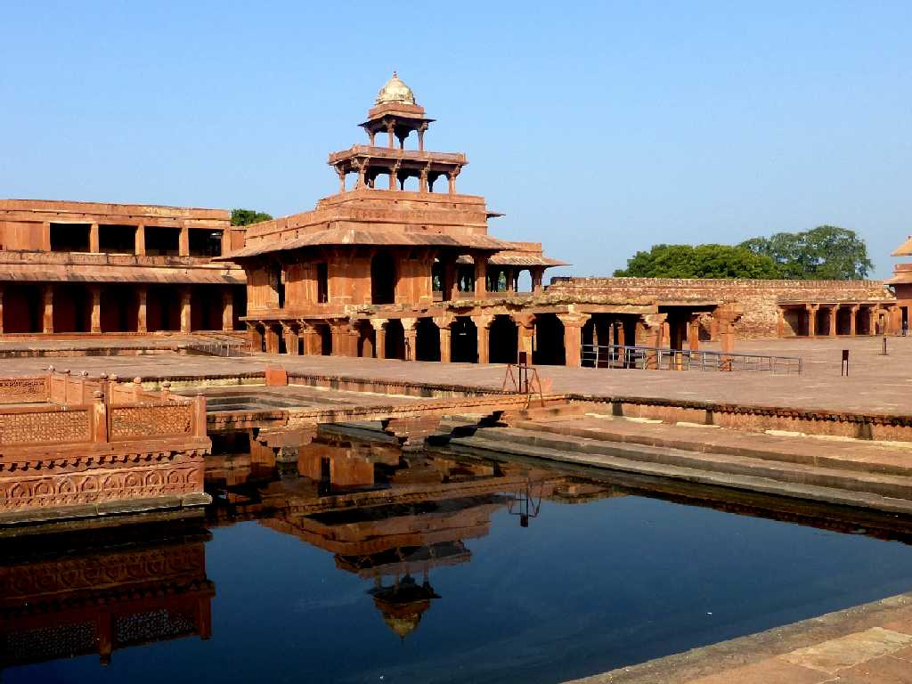
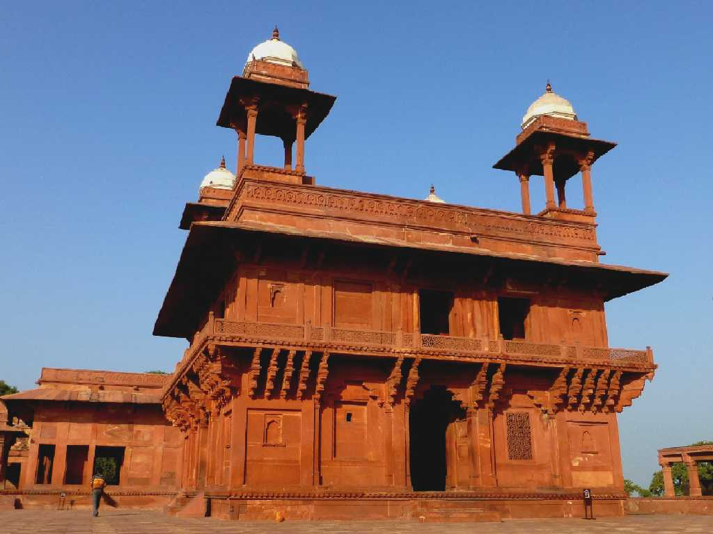
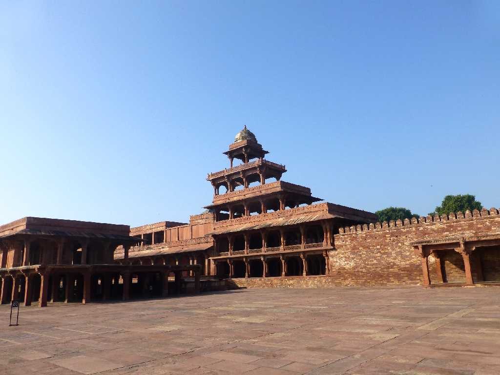
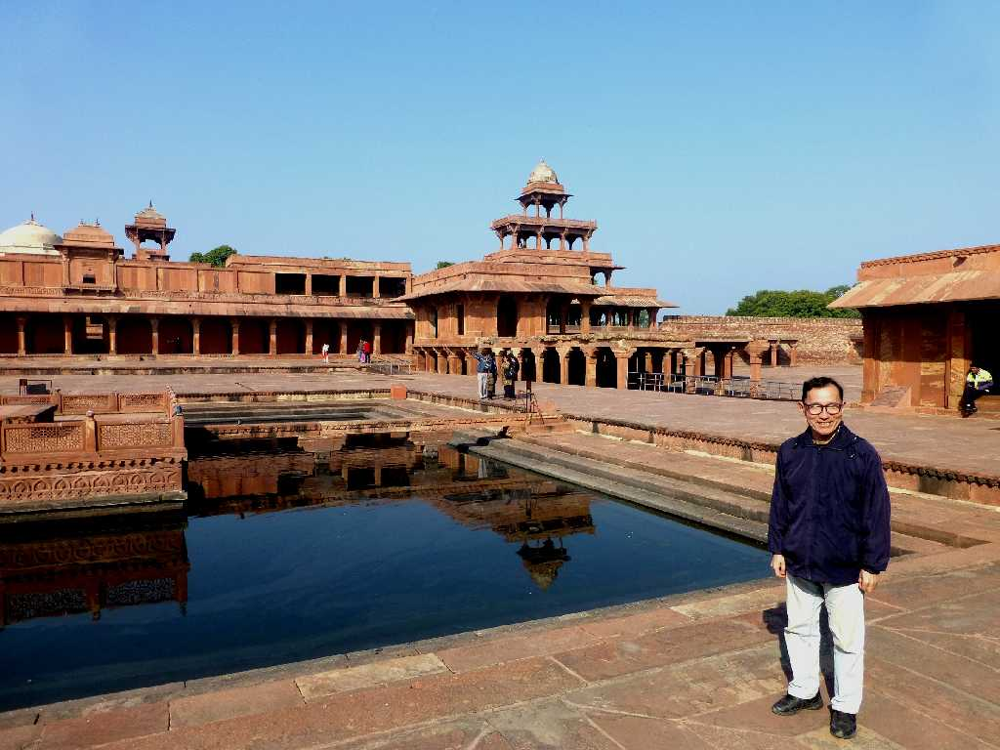

Anup Talao Fatehpur Sikri
ムガル帝国第３代皇帝アクバルがグジャラートの戦いに勝利し勝利の都(Fatehpur)シークリーを１５７１年築いて宮殿を創った
Diwan I Aam
皇帝の公的な謁見の宮殿

Diwan I Khas
皇帝の私的な謁見の宮殿

Panch Mahal
５層の宮殿には壁が無く展望 納涼 遊戯等のために創られたと考えられている

January 29 2015 Anup Talao